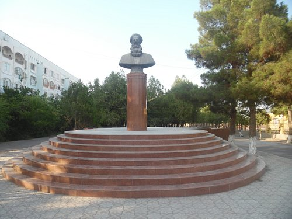
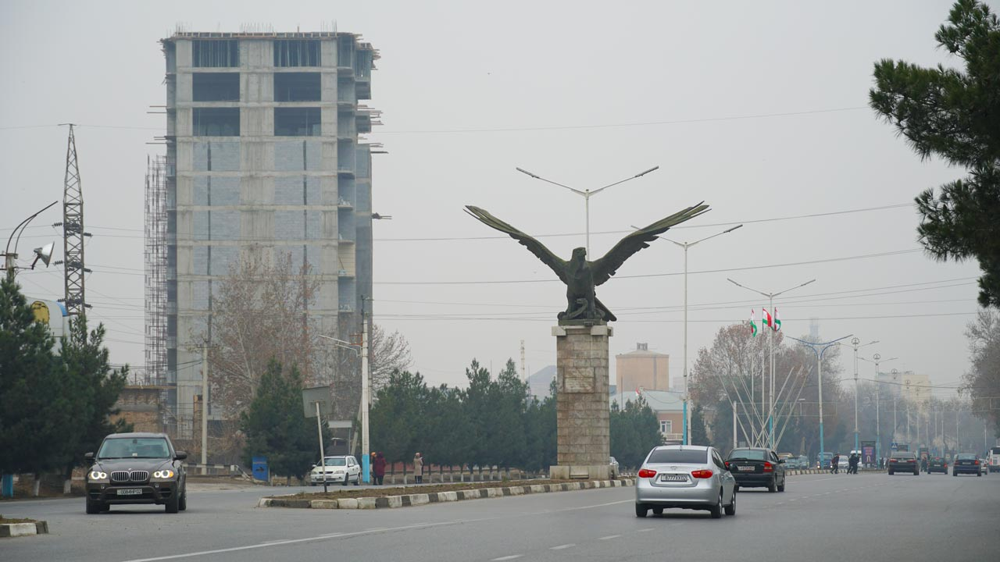
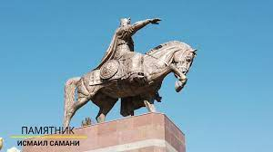
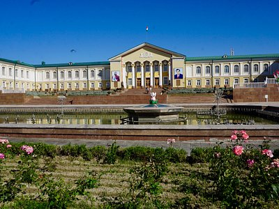
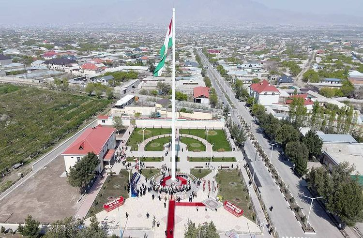

В северной части Согдийской области раскинулись земли Гафуровского района. Он окружает областной центр Худжанд и граничит с Узбекистаном на севере и востоке и с Киргизией на юге. На его территории расположены города областного подчинения – Кайраккум, Истиклол, Чкаловск (Шохкант)– которые, как и Ходженд, в состав района не входят. В городе Гафуров находится административный аппарат района. Через него проходит ветка железной дороги из Самарканда в Ферганскую долину. Географически Гафуровский район делится на две части. Южная, густонаселённая, лежит на равнине, в долине Сырдарьи и по берегам большого Кайраккумского водохранилища. Это регион с интенсивным земледелием (хлопок, овощные и бахчевые культуры, фрукты) и развитой многоотраслевой промышленностью. Северная часть района занимает отроги Кураминского хребта. Здесь куда меньше плотность населения, а жители заняты в сельском хозяйстве и добыче полезных ископаемых. Древнейшие поселения на территории Гафуровского района основаны в 1 тысячелетии до нашей эры, как например Хистеварз – одно из крупнейших сельских поселений мира. Как административная единица район выделен в 1957 году и до 1964 года назывался Худжандским. После его переименовали в Советабадский район, а в 1978 году дали название в честь таджикского историка и академика Бободжана Гафурова. Туристическая отрасль в Гафуровском районе включает пляжный отдых на побережье Кайраккумского водохранилища, а также походы горными тропами Кураминского хребта, где встречаются ущелья, оазисы, лесные массивы, живописные вершины.
    